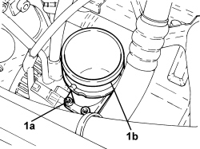

1048A51 RIGID AIR INTAKE HOSE TO TURBOCHARGER - R.R
- Path
- Procedures > 10 ENGINE > 1048 ENGINE AIR SUPPLY CIRCUIT > 1048A VACUUM AIR CIRCUIT > 1048A51 RIGID AIR INTAKE HOSE TO TURBOCHARGER - R.R
- Kind
- repair procedure (removal / refitting; the operation number is the code)
- Applies to
- engines: 2.4 JTD 20v; all production periods
- Interactive page
- https://sloeber94.github.io/elrnDB-aBrrSpdr/en/#/946003993
Applies to: engines: 2.4 JTD 20v; all production periods
 Removing
Removing
 Refitting
RefittingOp. 1016A10 SOUND-PROOFING COVER - R.R
Op. 1048A42 SLEEVE FROM FLOW METER TO TURBO CHARGER AIR INLET PIPE - R + R
1. Undo the bolts (1a) and remove the turbocharger rigid air inlet hose (1b).
- Remove the gasket.

Applies to: engines: 2.4 JTD 20v; all production periods
Refitting
Removing- Place the turbocharger rigid air inlet hose in position complete with new gasket making sure the centering bush is in the correct position and tighten the bolts.
Op. 1048A42 SLEEVE FROM FLOW METER TO TURBO CHARGER AIR INLET PIPE - R + R
Topics linked from this page (2)
- 1016A10 SOUND-PROOFING COVER - R.R
- 1048A42 SLEEVE FROM FLOW METER TO TURBO CHARGER AIR INLET PIPE - R + R
Topics that link to this page (6)
- 1064A22 VARIABLE GEOMETRY TURBOCHARGER R R
- 1072C44 EXHAUST MANIFOLD HEAT SHIELD - R+R
- 1080B62 CATALYTIC CONVERTER - R + R
- 1080C83 EXHAUST GAS INLET PIPING FROM EXHAUST MANIFOLD TO HEAT EXCHANGER EGR - R R
- 1084B40 ENGINE OIL DELIVERY PIPE TO TURBOCHARGER - R + R
- 1084B42 ENGINE OIL RETURN PIPE FROM TURBO - R + R